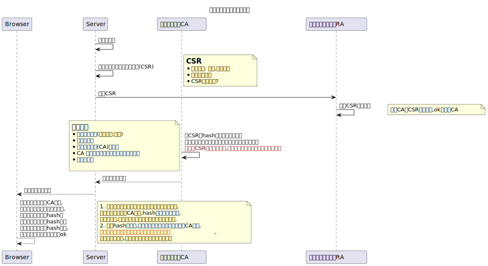
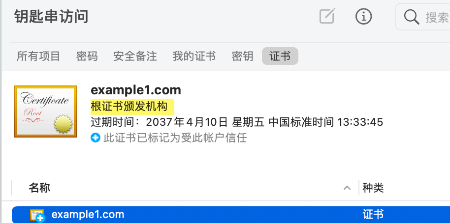

1 http的问题
HTTP 是明文传输的协议,数据在传输过程中不加密, 容易被窃听篡改和劫持
2 解决方案
2.1 1. 对称加密
什么是对称加密
- 能使用同一个密钥用来加密和解密
- 这也是普通人立马就可以想到的方式
- 举个随便设计的算法:
- 发送 hello world, 加密方法是 将字符加上在单词上的索引*密钥,这里密钥=1
- h 索引是1 -> h+1*1=i
- e 索引是2 -> e+2*1=g
- hello world => igopt xqupi
- 知道密钥就可以解密了
- 发送 hello world, 加密方法是 将字符加上在单词上的索引*密钥,这里密钥=1
2.2 2. 非对称加密
非对称加密
- 它使用了一对密钥，分别是公钥（Public Key）和私钥(Private Key)
- 浏览器发送数据时用公钥对数据进行加密, 服务端使用配对的私钥对数据进行解密
- 服务端返回数据给浏览器时用私钥进行加密, 浏览器用公钥进行解密
- 加密解密都相对比较耗时
如何解决对称加密中密钥传输安全问题?
- 使用非对称加密算法, 私钥放在服务器,被拦截黑客也无法获取,公钥在浏览器
- 浏览器使用公钥加密
对称加密用的密钥, 服务器使用私钥解密得到真实这个密钥. - 是不是觉得多此一举了, 直接用非对称加密算法加密数据不就得了??
- 非对称加密解密耗时, 每次数据传输都这样 ,伤不起
- 密钥由服务器生成, 只生成一对, 如果来一个客户端就生成一对,还是耗时.
- 所以只要浏览器访问它就会得到这个公钥, 黑客也能得到, 如果它拦截了服务器返回给客户端的数据,可以解密
- 所以我们使用结合2个算法,保证一开始对称加密的密钥(盐)传输安全就行了,对对称加密的密钥用公钥加密,黑客截取数据,因为它只有公钥,是无法解密的
- 这样服务端知道了 对称加密的密钥, 这之后就用对称加密算法对数据进行加密来传输
2.3 3. 中间人攻击
前面的问题
- 黑客可以在浏览器获取服务器发送的公钥的阶段拦截,那它可以伪造成服务器,作为一个中间人
- 浏览器发送到了 中间人, 中间人自己生成一对公钥私钥, 它将自己的这个公钥返回给浏览器,自己再向真正的服务器发起请求
- 浏览器得到一个假的公钥, 然后它发送的数据全部被中间人截获,可以解密…
- 问题的关键是, 浏览器确保得到服务端真正下发的公钥
如何解决呢?
- 现实的一个例子
- 假设我去一家某某明星开的店买东西, 我要先确认这家店是不是真的, 我们就去看营业执照
- 一看盖章是真的. 这就行了吗? 一个人想开个店 ,他自己去申请营业执照, 那这个章也是真的啊, 光看章这样还不行!!!
- 那我看看营业执照上写的法人是谁不就行了吗? 对!
- 审批人员, 盖章的时候看身份证和脸写上法人,而不是让申请者随便写,然后在名字上盖章,这样没法篡改了.
- 现在我们改进我们之前的设计(仅仅是自己的思考过程,与实际https不一样):
- 服务端将 它的公钥 发送给 值得信赖第三方证书颁发机构CA,CA用自己的一对密钥中的私钥对服务端公钥进行加密
- 服务端 把从CA那里获取的密文发送给浏览器, 浏览器用 CA的公钥进行解密.这里的关键就是操作系统安装后就有一些CA的公钥,所以浏览器无需通过网络获取CA公钥,要不然又重复之前的问题了.只要浏览器能用这个CA公钥解密, 就说明数据是通过CA加密的.
- 那中间人将自己的公钥发送给CA,CA用私钥加密后发送给中间人,中间人再转发给浏览器,这个时候浏览器是可以解密的,就以为是ok的了! 不行!!
- 那CA给你公钥加密的时候, 再带上发起请求的网站的域名不就ok了. 这样即使中间人请求CA,CA加密会带上中间人的域名, 浏览器解密后发现域名不是自己想要访问的网站. 中间人向CA申请证书时,会递交个人信息, CA会审核真实性, 所以不会让它随便写域名,无法冒充原来我们真正请求的那个服务器
问题
- 中间人把自己当成CA 做证书发给浏览器行吗?
- 这样浏览器查看证书颁发机构, 它操作系统就没有,因为只有内置的那些可靠的, 所以没有对应的公钥来解密
- 当然如果你的系统被黑客安装了它自己生成的证书, 那么浏览器就会找到对应的公钥来解密了,不过这是你的问题
2.4 4. https 最终方案
3 证书相关
Root CA 会给二级 CA 颁发证书,
一般用户网站的证书 由 二级CA颁发.
操作系统默认就安装了很多Root CA
Tip
X.509 是一种常用的数字证书格式标准,定义了证书的结构和内容
3.1 openssl 相关操作
# 私钥
# 记得权限设置600最好
# 非对称算法 使用rsa 生成
openssl genrsa -out server.key 2048
# 表示会对生成的key 进行一次对称加密, 会提示你输入密码
# 不过不推荐, 需要你输入密码解密.麻烦
openssl genrsa -out server-des.key -des 2048
# 从私钥提取公钥 ,这里要对应的算法, rsa
openssl rsa -in server.key -pubout -out server.pub
# 会提示你输入密码,才能提取公钥
openssl rsa -in server-des.key -pubout -out server-des.pub
# 将加密过的私钥 转换为 不加密的
openssl rsa -in server-des.key -out server-des-remove.key
echo 123 > tmp.txt
# 使用公钥加密
openssl rsautl -encrypt -in tmp.txt -inkey server.pub -pubin -out tmp.txt.encry
# 使用私钥解密
# 输出到文件
openssl rsautl -decrypt -in tmp.txt.encry -inkey server.key -out tmp.txt.dencry
# 直接输出解密后的内容
openssl rsautl -decrypt -in tmp.txt.encry -inkey server.key
# 使用私钥加密(签名)
openssl rsautl -sign -in tmp.txt -inkey server.key -out tmp.txt.sign
# 使用公钥解密(验签)
openssl rsautl -verify -in tmp.txt.sign -inkey server.pub -pubin3.2 模拟CA颁发证书
Important
注意这里是我们模拟CA机构, 所以步骤很多, 如果只是简单的为我们服务器生成一个证书, 不需要这样,见快速自签名证书
3.2.1 配置CA
/etc/pki/tls/openssl.cnf
[ ca ]
default_ca = CA_default #默认CA的设置是哪个, 下面那个配置就是了.
####################################################################
[ CA_default ]
dir = /etc/pki/CA #
certs = $dir/certs # 发布的证书放这个目录
crl_dir = $dir/crl # 证书吊销列表存放目录
database = $dir/index.txt # 颁发给谁等等信息数据的索引
#unique_subject = no # 默认是yes ,表示 证书申请者主体 唯一, 不能用同一个csr申请多个证书
new_certs_dir = $dir/newcerts # 新颁发的证书存放目录,当然上面的certs 也会有新颁发的证书存放
certificate = $dir/cacert.pem # CA的证书 (我们自己测试就一个Root CA就行)
serial = $dir/serial # 每个证书都有编号, 这里是下一个要颁发的证书的编号
crlnumber = $dir/crlnumber # 吊销的编号,同上
crl = $dir/crl.pem # 包含之前所有吊销证书的列表
private_key = $dir/private/cakey.pem# CA的私钥
RANDFILE = $dir/private/.rand # private random number file
x509_extensions = usr_cert # The extentions to add to the cert
name_opt = ca_default # Subject Name options
cert_opt = ca_default # Certificate field options
default_days = 365 # 证书默认有效期 天 ,可以改成3650
default_crl_days= 30 # how long before next CRL
default_md = sha256 # use SHA-256 by default
preserve = no # keep passed DN ordering
policy = policy_match #匹配下面的 表示使用这个安全策略
[ policy_match ] # 你在生成证书的时候会提示你输入这些信息
# match 表示将来你用户网站申请证书时填写东西必须与CA的一致
# 也就是说你网站申请时 国家 部门,公司必须和CA的一致
# 我们自己 内部用, 可以用这个策略来
countryName = match
stateOrProvinceName = match # 州名或省份名称，可以是中文或英文
organizationName = match # 公司名称，可以是中文或英文
organizationalUnitName = optional # 部门名称，可以是中文或英文
commonName = supplied #必须输入 申请 SSL 证书的具体网站域名
emailAddress = optional # optional 可写可不写
[ policy_anything ] # 你可以选择这个策略
countryName = optional
stateOrProvinceName = optional
localityName = optional
organizationName = optional
organizationalUnitName = optional
commonName = supplied
emailAddress = optional3.2.2 CA生成根证书
# 模拟CA,本地自定义CA,我们假设在一台服务器上 是专门弄CA的
/etc/pki/CA
├── certs
├── crl
├── newcerts
└── private
cd /etc/pki/CA
touch index.txt
# 16进制
echo 01 > serial
# 生成CA的私钥
openssl genrsa -out ./private/cakey.pem 2048
# 生成CA自签名证书 cacert.pem
# x509表示输出这种格式的证书
openssl req -x509 -new -key ./private/cakey.pem \
-days 5000 \
-out cacert.pem
# 直接指定
openssl req -x509 -new -key ./private/cakey.pem \
-subj "/CN=example1.com/C=CN/O=taobao/ST=BJ" \
-days 5000 \
-out cacert.pem
# 验签, 用颁发证书的 x 去验证 被签发的 y
openssl verify -CAfile cacert.pem cacert.pem
# 查看证书内容, 如果直接用base64 -d 解码会看到一些乱码.
# 也可以将这个文件 打开 (在mac或windows上 会用默认的程序打开,可以看到相关信息)
openssl x509 -in cacert.pem -noout -text
因为我们的配置文件里有 x509_extensions = v3_ca
The extentions to add to the self signed cert
所以这些相应的会在自签名证书里添加
Certificate:
Data:
Version: 3 (0x2)
Serial Number:
ee:e1:85:de:8f:2a:00:76
Signature Algorithm: sha256WithRSAEncryption
# 证书颁发者
Issuer: C=XX, L=Default City, O=Default Company Ltd, CN=example1.com
Validity
Not Before: Aug 1 16:51:52 2023 GMT
Not After : Apr 9 16:51:52 2037 GMT
# 证书申请者, 颁发给谁 ,这里和 颁发者一样, 自签名
Subject: C=XX, L=Default City, O=Default Company Ltd, CN=example1.com
Subject Public Key Info:
Public Key Algorithm: rsaEncryption
Public-Key: (2048 bit)
Modulus:
00:98:ad:ff:cc:a1:2d:2c:24:30:d4:87:14:02:06:
0f:50:60:ec:b2:0c:19:09:7c:96:74:82:46:c0:a3:
bc:86:77:7e:b2:fb:9e:a1:4f:fd:2b:3a:02:20:2b:
a1:94:d4:49:62:ce:36:1f:80:a8:71:fb:1e:3f:e3:
90:d3:78:f7:74:86:4f:3b:8c:85:d1:ae:4f:26:23:
15:29:f0:ed:0f:ee:a7:08:f5:3c:70:f2:b5:1c:f1:
71:e1:73:79:85:9d:11:64:2f:84:29:93:5b:df:d7:
a2:32:19:fe:c4:72:70:a9:d1:b3:54:22:6e:77:27:
2d:43:ec:5c:06:6a:7b:65:07:a9:ba:9a:35:db:2a:
7c:6f:f5:d6:27:59:15:d5:40:d3:94:dc:4c:7d:25:
8e:a3:3d:23:d1:5b:4e:6a:35:cf:ee:b4:0f:59:ec:
65:bb:b6:75:21:c5:6d:dd:a6:87:a7:15:af:bb:e1:
a5:75:6c:6c:36:da:60:13:41:f3:a8:11:b1:3f:8f:
bd:d4:03:c7:e0:f5:2f:68:76:7f:d0:67:45:eb:48:
8a:ad:70:34:3f:6b:fa:fc:bb:83:4f:e8:a0:3c:5c:
77:b5:c6:10:e0:b3:a8:fc:66:8c:56:e8:9d:64:6e:
8c:fe:42:65:02:c5:1d:81:66:e4:60:f2:5b:6d:e1:
cc:cb
Exponent: 65537 (0x10001)
X509v3 extensions:
X509v3 Subject Key Identifier:
3C:CE:32:F7:55:76:EB:E7:4D:CF:10:26:F0:35:D2:24:3B:89:6B:94
X509v3 Authority Key Identifier:
keyid:3C:CE:32:F7:55:76:EB:E7:4D:CF:10:26:F0:35:D2:24:3B:89:6B:94
X509v3 Basic Constraints:
CA:TRUE
Signature Algorithm: sha256WithRSAEncryption
49:b0:f1:1b:58:06:be:02:e7:8a:7e:f0:59:d1:96:22:9f:62:
ba:e0:a3:09:5c:56:b3:2b:8c:a4:9d:6b:4f:dc:ea:af:39:b1:
05:01:78:ed:7d:c6:84:59:3b:a6:d4:c4:5f:ae:d9:d3:82:80:
be:41:e0:c5:ae:ff:40:89:c5:2a:bd:f3:5b:20:c6:c5:59:6d:
32:3c:19:b2:9b:4d:7f:c3:ef:a1:ab:51:6e:19:b7:88:45:91:
ef:ab:e7:c9:bd:c0:ca:c0:fa:48:58:cf:a0:e3:d2:bb:41:e8:
60:da:6b:0b:1f:91:fa:cb:08:9c:4f:4e:05:3b:80:2a:ad:63:
b1:75:c1:57:1a:08:27:a2:d6:06:52:00:d4:d2:41:3a:ad:27:
11:67:ba:de:85:57:24:d5:cf:77:d7:b7:a7:8a:9e:c2:29:e4:
41:ce:4a:37:8f:db:14:50:32:60:80:9a:92:f1:76:7e:73:80:
37:cc:6c:fb:ca:82:02:8b:8f:62:5c:91:b1:0a:ad:72:57:e0:
6d:a1:12:0b:c7:86:ef:9f:47:35:52:96:65:e0:cf:b2:65:d5:
45:a1:8f:db:12:2a:e8:ae:c6:f3:08:97:b5:1a:7a:4c:f9:92:
30:bd:ce:28:94:84:a9:67:f4:d5:2a:87:cc:da:6e:4c:ad:a6:
18:39:d5:323.2.3 用户服务器提交申请
# 现在扮演 用户网站申请证书, 假定在另外一台服务器
# 先创建网站的私钥
openssl genrsa -out server.key 2048
# 直接创建证书签名请求csr文件
# 注意 由于我们配置了 policy_match ,所以几个 需要和CA的一致
# 指定 server.key 是因为csr信息 需要包含服务端的公钥,公钥可以从私钥提取.
# 说明这些是想说 写的时候 知道为啥需要这些参数
openssl req -new -key server.key -subj "/CN=example1.com/C=CN/O=taobao/ST=BJ" -out server.csr
# 查看一下csr
openssl req -in server.csr -text -noout
# 将它 发送给 CA服务器3.2.4 CA根据申请生成证书
# 可以指定 -policy ,这样不用与ca 某些一致
# openssl ca -in server.csr -policy policy_anything -out certs/server.crt -days 3650
# 回到 CA 的服务器 ,拿到 用户网站的csr文件, 签署生成证书,最后你发送给申请者
openssl ca -in server.csr -out certs/server.crt -days 3650 #(1)执行的提示信息
/etc/pki/CA
├── newcerts # 这个目录下会自动有这次颁发的证书
│ └── 01.pem # 里面的内容更多, 会增加解码后的内容
# 验签
openssl verify -CAfile cacert.pem certs/server.crt
# 查看证书, 查看部分内容, -text 会显示所有 -issuer 颁发者 -dates 有效期
openssl x509 -in certs/server.crt -noout -subject -issuer -dates
# 查看证书状态,验证有效与否 01 是serial 证书编号
openssl ca -status 01
# 默认不能使用同一个csr 申请 另外一个证书, 不过可以修改 使它可以
# 除了 前面的配置文件, 我们可以 修改 index.txt.attr
unique_subject = yes # 改成no 就可以3.2.5 客户端安装证书
- 客户端(浏览器的系统) 需要安装 上面创建的根证书 cacert.pem,这样你操作系统就有了CA的公钥了,就好像系统安装后默认的那些Root CA一样 
- 访问 golang web https服务 https://example1.com, 会提示你安装证书
package main
import (
"fmt"
"log"
"net/http"
)
func main() {
http.HandleFunc("/", handler)
log.Fatal(http.ListenAndServeTLS(":443", "./pki/server.crt", "./pki/server.key", nil))
}
func handler(w http.ResponseWriter, r *http.Request) {
fmt.Fprintln(w, "Hello, HTTPS!")
}# 将server.crt 发送到其他机器, 可以在这样的机器上 curl
curl --cacert server.crt --resolve example1.com:443:192.168.1.104 https://example1.com/
Hello, HTTPS!
chrome/edge 浏览器问题
- 访问网页会提示你 Subject Alternative Name Missing
- 提示 net: cert_invalid
/etc/pki/tls/openssl.cnf 添加
生成证书等步骤稍作变更
openssl genrsa -out ./private/cakey.pem 2048
# 根证书 -extensions v3_req 需要显式指定
openssl req -x509 -new -key ./private/cakey.pem \
-subj "/CN=example1.com/C=CN/O=taobao/ST=BJ" \
-extensions v3_req -days 5000 \
-out cacert.pem
openssl genrsa -out server.key 2048
# csr 默认就会应用配置里的 req_extensions = v3_req ,因为就是req 生成csr 请求文件 的操作
# 如果前面的 req_extensions = v3_req 被注释了, 则需要 显式指定-extensions v3_req
openssl req -new -key server.key -subj "/CN=example1.com/C=CN/O=taobao/ST=BJ" -out server.csr
# 生成证书
# 如果不指定 -extensions v3_req 则会使用配置文件里 user_cert 指定的配置.
# x509_extensions = usr_cert # The extentions to add to the cert
# [ usr_cert ]
# These extensions are added when 'ca' signs a request.
openssl ca -in server.csr -extensions v3_req -out /etc/pki/CA/certs/server.crt -days 3650
# 查看一下, 会看到版本是3 等信息openssl genrsa -out server.key 2048
# 实际上就是使用临时的openssl.cnf (多包含了我们设置的[SAN] 扩展,名字随便起, -extensions 指定就行)
# 生成的 server.crt 里 X509v3 extensions: 就只会有 subjectAltName
openssl req -x509 -new \
-key server.key \
-subj "/CN=example1.com/C=CN/O=taobao/ST=BJ" \
-extensions SAN \
-config <(cat /etc/pki/tls/openssl.cnf <(echo [SAN];echo subjectAltName=DNS.1:example1.com)) \
-days 1000 \
-out server.crt最后好像除了ca根证书安装, 网站服务器的证书还是要手动安装?
3.2.6 99.吊销证书
3.3 快速生成证书
Tip
不用模拟ca那样
# 不需要ca根证书的, 自签名证书, 自己给自己签名,
# 客户端直接安装这个,里面有公钥,然后服务端也是发送这个证书
# 客户端发送操作系统有这个证书的颁发机构, 其实就是它自己
openssl genrsa -out server.key 2048
openssl req -x509 -new -key server.key -subj "/CN=example1.com/C=CN/O=taobao/ST=BJ" -days 5000 -out server.crt
# centos 7有自带的Makefile
cd /etc/pki/tls/certs/
make # 会提示使用方法
# 需要根证书的
# 根 私钥
openssl genrsa -out ca.key 2048
# 根证书
openssl req -x509 -nodes -new -key ca.key -subj "/CN=example1.com/C=CN/O=tb/ST=BJ" -days 5000 -out ca.crt
# 服务器 私钥
openssl genrsa -out server.key 2048
# csr
openssl req -new -key server.key -subj "/CN=example1.com/C=CN/O=tb/ST=BJ" -out server.csr
# 之前的这个操作,会去找配置中的 ca私钥
# openssl ca -in server.csr -out server.crt -days 3650
# 这里我们直接指定 -CAcreateserial 加上这个表示会创建编号文件 ca.srl
# -extfile - configuration file with X509V3 extensions to add
# -extensions - section from config file with X509V3 extensions to add
# 前面我们提到chrome 提示有问题, 应该 只要服务器证书 设置 subjectAltName 就行了.
# 指定ca.crt 那是因为 生成的证书需要颁发机构的信息.
openssl x509 -req -CA ca.crt \
-CAkey ca.key -CAcreateserial \
-in server.csr -out server.crt \
-extensions v3_req \
-extfile <(cat /etc/pki/tls/openssl.cnf <(cat <<EOF
[ v3_req ]
basicConstraints = CA:FALSE
keyUsage = nonRepudiation, digitalSignature, keyEncipherment
subjectAltName = @alt_names
[alt_names]
DNS.1 = example1.com
EOF
))
# 查看
openssl x509 -in server.crt -noout -text #(1)3.4 关于证书的总结
Tip
客户端安装根证书(自签名证书也一样)是为了解密服务端传过来的证书内容,以获取服务端的公钥,
然后使用公钥加密随机密钥(用来对称加密用),将这密钥安全发送给服务端,最后用这个密钥加密传输的数据,以达到安全的目的
4 抓包分析https
Note
go web程序在虚拟机中, 在宿主机浏览器访问
宿主机中用safari访问 https://example1.com, 等一段时间,将虚拟机中的抓取的包go.pcap 在宿主机中用wireshark 打开这个
Caution
TODO
5 其他安全相关
5.1 摘要算法
Tip
- 摘要算法（Hash Algorithm）也叫哈希算法、散列算法, 它是一种将任意长度的数据映射为固定长度摘要（哈希值）的算法.摘要算法常用于验证数据的完整性和唯一性,以及密码学中的数字签名、密码校验等应用
- 任意长度–> 固定长度, 很显然不可能从映射后的摘要值推导出原来的数据.